歷屆成員
我們曾在實驗室一起成長共事，如今分布在各研究所、產業界與研究單位。
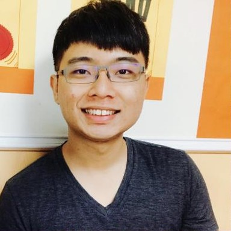
林智皓
Lin, Chih-Hao
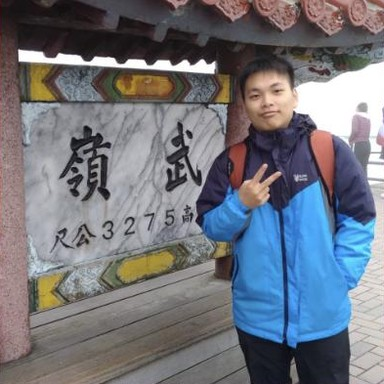
楊矅毓
Yang, Yao-Yu
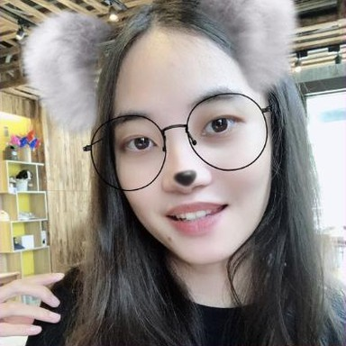
陳怡歆
Chen, Yi-Hsin
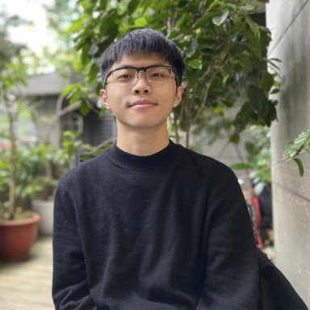
簡瑀鋅
Jian, Yu-Shin
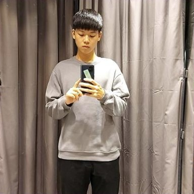
蔡沅甫
Tsia, Yen-Fu
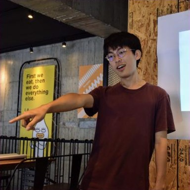
林仁凱
Lin, Jen-Kai
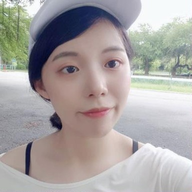
李婉菁
Lee, Wan-Ching
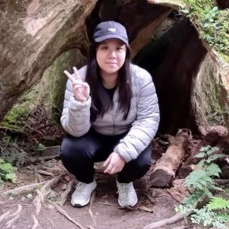
張湘雲
Chang, Hsiang-Yun
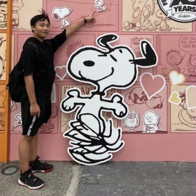
張凱恩
Zhan, Kai-En
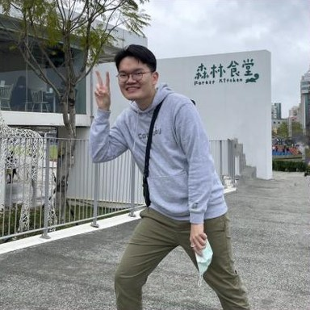
吳御誠
Wu, Yu-Cheng
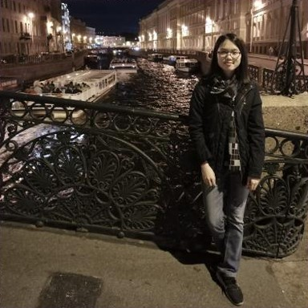
劉家余
Liu, Chia-Yu
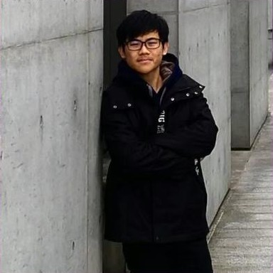
楊政翰
Yang, Cheng-Han
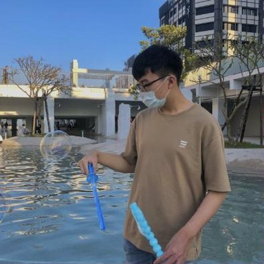
曾品睿
Zeng, Pin-Rui
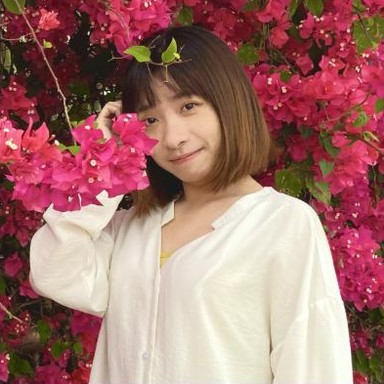
張馨文
Zhang, Xin-Wen
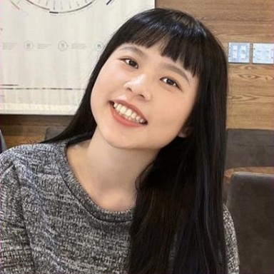
曾宛沁
Zeng, Wan-Qin
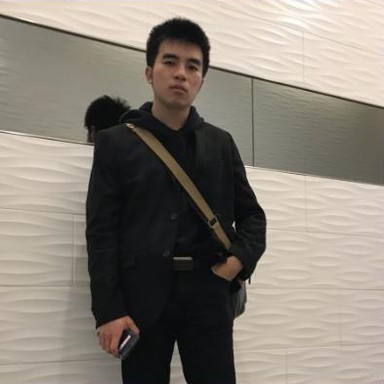
陳詠鈞
Chen, Yung-Chun
林奕丞
Lin, Yi-Cheng
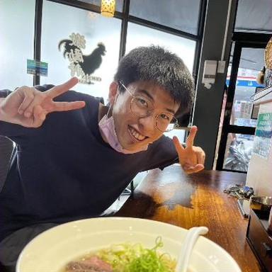
和定謙
Ho, Ting-Chien
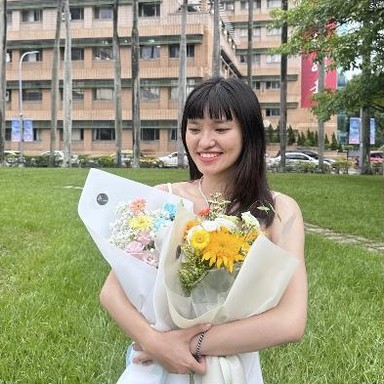
陳姵君
Chen, Pei-Jun
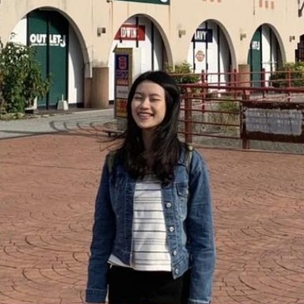
黃苡晴
Huang, Yi-Ching
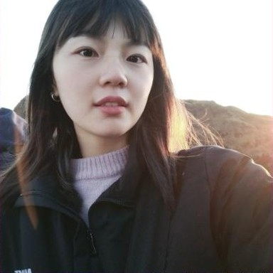
王嘉筠
Wang, Chia-Yun
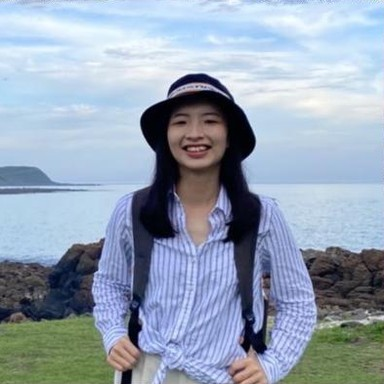
楊詠晴
Yang, Yung-Ching
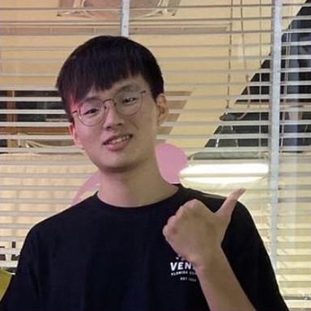
林峻毅
Lin, Chun-Yi
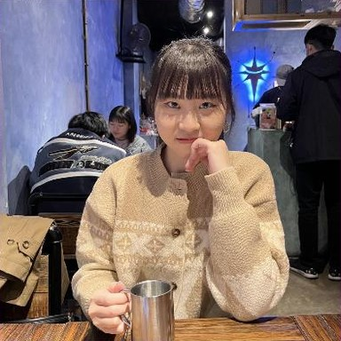
曾允柔
Zeng, Yun-Rou
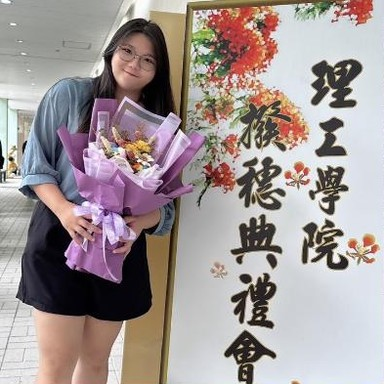
張芷菱
Jhang, Jhih-Lin
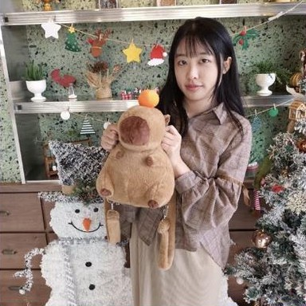
劉怡君
Liu, Yi-Jun

何紹熏
Ho, Shao-Hsun